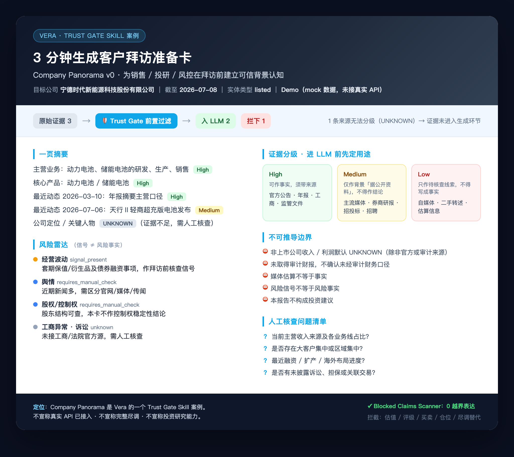

① 痛点
拜访准备，不该靠临时拼材料
研报、公告、新闻散落多处；更危险的是把未经验证的信息带进客户现场。
② 能力
输入公司名，直接得到一页拜访卡
企业摘要 · 风险雷达 · 证据等级 · 结论边界 · 人工核查清单
③ 可信
不是先生成再补来源，而是先校验证据
证据进入模型前先分级、定用途；生成后再次检查风险边界。
可信校验前置
证据分级
风险边界检查
已跑通
宁德时代 · 公司拜访速查卡原始证据 3 → 可信校验 → 采用 2 / 拦下 1
